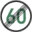
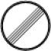
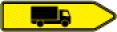
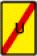

| 1 | 201
Андреевский (косой) крест | 1. Водитель транспортного средства должен предоставить преимущество рельсовому транспортному средству
2. Запрещено останавливаться ближе 10 м до этого знака, если он при этом будет загорожен.
3. Перед и за этим знаком запрещена стоянка
а) в закрытом населенном пункте (знак 310 и 311) на расстоянии до 5 м,
b) вне закрытого населенного пункта на расстоянии до 50 м.
4. Дополнительная черная стрелка означает, что знак действует только в ее направлении.
Знак (также горизонтальный) располагается как правило непосредственно перед переездом. Символ молнии в центре показывает, что на данном участке железной дороги контактный провод под напряжением. |
| 2 | 205
Предоставить преимущество | 1. Водитель транспортного средства должен предоставить преимущество.
2. Запрещено останавливаться ближе 10 м до этого знака, если он при этом будет загорожен.
Знак ставится непосредственно перед перекрестком или примыканием. О нем может быть сообщено заранее с помощью такого же знака и дополнительной таблички с указанием расстояния. |
| 2.1 | | Водитель транспортного средства должен предоставить преимущество и обратить внимание на движение велосипедов справа и слева
Эта дополнительная табличка ставится над знаком 205 |
| 2.2 |
| Водитель должен предоставить преимущество рельсовым транспортным средствам
Эта дополнительная табличка ставится над знаком 205 |
| 3 | 206
Остановиться. Предоставить преимущество | 1. Водитель должен остановиться и предоставить преимущество
2. Запрещено останавливаться ближе 10 м до этого знака, если он при этом будет загорожен.
3. Если стоп-линия (знак 294) отсутствует, остановиться следует там, откуда просматривается другая дорога |
| 3.1 |  | Эта табличка, установленная совместно со знаком 205, предупреждает о необходимости остановки на указанном расстоянии |
| 3.2 | | Водитель транспортного средства должен остановиться и предоставить преимущество, а также обратить внимание на движение велосипедов справа и слева
Эта дополнительная табличка ставится над знаком 206 |
| к 2 и 3 | | Эта табличка, установленная совместно со знаками 205 или 206, показывает направление главной дороги (изменение направления права преимущественного проезда) |
| 4 | 208
Преимущество встречного движения | Водитель должен предоставить преимущество встречному движению. |
| к пунктам с 11 по 13 | | Если знаки 223.1, 223.2 или 223.3 установлены для проезжей части с более чем двумя полосами движения, их число указывается количеством стрелок |
| 11 | 223.1
Движение по обочине | Данный знак разрешает движение по обочине. В этом случае обочина используется как правая полоса движения |
| 11.1 | | Знак 223.1 совместно с табличкой предупреждает об окончании своего действия через указанное расстояние |
| 12 | 223.2
Дальнейшее движение по обочине запрещено | Отмена разрешения использовать обочину как полосу движения |
| 13 | 223.3
Освободить обочину | Знак предписывает освободить обочину |
| 14 | 224
Остановочный пункт | Стоянка менее чем в 15 м перед и за знаком запрещена
Знак обозначает остановочный пункт рейсовых и школьных автобусов. Совместно с дополнительной табличкой "Школьный автобус" (с указанием времени) на общем белом щите обозначает остановочный пункт только школьного автобуса |
| 15 | 229
Стоянка такси | Остановка на стоянках такси запрещена, за исключением свободных такси
Длина стоянки такси определяется указанием предусмотренного количества машин такси, или установкой в начале стоянки горизонтальной белой стрелки, указывающей на проезжую часть, а в конце - такой стрелки, указывающей в сторону от проезжей части, или разметкой, запрещающей остановку и стоянку (знак 299) |
| 16 | 237
Велосипедная дорожка | 1. Велосипедисты обязаны использовать велосипедную дорожку, а не проезжую часть ("обязанность использования велосипедной дорожки").
2. Другие участники движения не могут ее использовать.
3. Если дополнительной табличкой другим участникам движения разрешено движение по велосипедной дорожке, они должны считаться с велосипедным движением и, в случае необходимости, привести в соответствие с ним свою скорость |
| 17 | 238
Дорожка для верховой езды | 1. Всадники и погонщики лошадей обязаны использовать дорожку для верховой езды, а не проезжую часть ("обязанность использования дорожки для верховой езды").
2. Другие участники движения не могут ее использовать.
3. Если дополнительной табличкой другим участникам движения разрешено движение по дорожке для верховой езды, они должны считаться с всадниками и, в случае необходимости, привести в соответствие с ним свою скорость |
| 18 | 239
Тротуар (пешеходная дорожка) | 1. Другие участники движения могут использовать пешеходную дорожку, только когда это разрешено дополнительной табличкой.
2. В этом случае водители должны считаться с пешеходами и согласовывать с их движением свою скорость. Пешеходам не должно создаваться угрозы или помехи. При необходимости водитель должен остановиться и ждать.
Знак обозначает тротуар (пешеходную дорожку) (§ 25 Абзац 1 Строка 1) в случае, когда необходимо четкое обозначение. |
| 19 | 240
Совместная пешеходная и велосипедная дорожка | 1. Велосипедисты обязаны использовать совместную пешеходную и велосипедную дорожку, а не проезжую часть ("обязанность использования велосипедной дорожки").
2. Другие участники движения не могут ее использовать.
3. Если дополнительной табличкой другим участникам движения разрешено движение по совместной пешеходной и велосипедной дорожке, они должны считаться с пешеходами и велосипедистами и, в случае необходимости, все должны свою скорость привести в соответствие со скоростью пешеходов
Этот знак обозначает также тротуар (пешеходную дорожку) (§ 25 Абзац 1 Строка 1) |
| 20 | 241
Раздельная велосипедная и пешеходная дорожки | 1. Велосипедисты обязаны использовать велосипедную часть раздельной дорожки, а не проезжую часть ("обязанность использования велосипедной дорожки").
2. Другие участники движения не могут ее использовать.
3. Если дополнительной табличкой другим участникам движения разрешено движение по раздельной велосипедной и пешеходной дорожке, они должны считаться с пешеходами и велосипедистами и, в случае необходимости, все должны свою скорость привести в соответствие со скоростью пешеходов
Этот знак обозначает также тротуар (пешеходную дорожку) (§ 25 Абзац 1 Строка 1) |
| 21 | 242.1
Начало пешеходной зоны | 1. Другие участники движения не могут использовать пешеходную зону, если только это не указано дополнительной табличкой.
2. В этом случае водители должны считаться с пешеходами и согласовывать с их движением свою скорость. Пешеходам не должно создаваться угрозы или помехи. При необходимости водитель должен остановиться и ждать. |
| 22 | 242.2
Конец пешеходной зоны | |
| 23 | 244.1
Начало дороги для велосипедов | 1. Другие участники движения не могут использовать дорогу для велосипедов, если только это не указано дополнительной табличкой.
2. Водители должны двигаться со скоростью не более 30 км/ч. Велосипедистам не должно создаваться угрозы или помехи. При необходимости водитель должен еще снизить скорость.
1. Разрешено движение велосипедов рядом.
2. В остальном действуют предписания относительно использования проезжих частей и преимущества проезда |
| 24 | 244.2
Конец дороги для велосипедов | |
| 25 | 245
Особая полоса для движения автобусов | 1. Движение по особой полосе прочих транспортных средств, кроме рейсовых автобусов и транспортных средствам, обозначенным табличкой "Школьный автобус", с правом перевозки пассажиров, участвующим в школьных перевозках и перевозках инвалидов, запрещено.
2. Транспортные средства, перевозящие больных, такси, велосипеды и автобусы нерегулярного сообщения могут двигаться по особой полосе для автобусов только когда это разрешено дополнительной табличкой.
3. Такси для немедленной посадки и высадки пассажиров могут останавливаться на остановочных пунктах (знак 224)
4. Электрические транспортные средства могут выделенные полосы использовать только тогда, когда это разрешено дополнительной табличкой.
|
| 25.1 |
| Электрическим транспортным средствам разрешается движение по выделенной полосе
|
| 26 | | Следующие знаки с 250 по 261 (запрет движения) полностью или частично запрещают участие в движении в соответствии с указанными в Столбце 2 данными.
Для знаков с 250 по 259
1. Знаками одинакового образца с символами согласно § 39 Абзац 7 могут быть запрещены разные виды движения.
2. Два запрета могут быть объединены на одной табличке |
| 27 |
| Если на дополнительной табличке указан вес, как, например, "7,5 т", то этот запрет действует только для транспортного средства, разрешенный общий вес которого превышает указанную величину |
| 28 | 250
Запрет для транспортных средств всех видов | 1. Знак не распространяется на ручные транспортные средства и несмотря на § 28 Абз. 2 также не распространяется на погонщиков лошадей и скота.
2. Мотоциклы и велосипеды можно толкать вручную |
| 29 | 251
Запрет для автомобилей | Запрет для автомобилей и прочих многоколейных транспортных средств |
| 30 | 253
Запрет для грузовых транспортных средств свыше 3,5 т | Запрет для грузовых транспортных средств с разрешенным общим весом свыше 3,5 т, включая их прицепы, и для тракторов. Исключение - легковые машины и автобусы |
| 30.1 |
| Только в комбинации со знаком 253 ограничивает запрет для сквозного движения для грузовых автомобилей с разрешенным общим весом более 12 т. Сквозным движением не считается:
а) проезд или выезд с территории, находящейся на дороге с запретом движения или на дороге, попасть на которую можно только по дороге с запретом движения,
b) перевозка грузов по смыслу § 1 Абз. 1 Закона о транспортной перевозке грузов в район в пределах 75 км, считая по кратчайшему пути от центра до начала поездки первого пункта погрузки такого транспортного средства (центр города). Сюда относятся все общины, центр которых лежит внутри района, или
c) движение транспортных средств, указанных в § 1 Абз. 2 Закона о взимании платы за проезд по автобанам с тяжелых грузовиков.
2. Исключением из запрета является движение по предусмотренному объездному пути (знаки 421, 442, 454-459 или знаки 460 и 466), принимая во внимание особые условия движения |
| 31 | 254
Запрет для велосипедов | |
| 32 | 255
Запрет для мотоциклов | Запрет для мотоциклов, в том числе с коляской, мотороллеров и велосипедов с мотором |
| 33 | 259
Запрет для пешеходов | |
| 34 | 260
Запрет для безрельсовых транспортных средств | Запрет для мотоциклов, в том числе с коляской, мотороллеров и велосипедов с мотором, а также для автомобилей и прочих многоколейных транспортных средств |
| 35 | 261
Запрет для специально обозначенных транспортных средств с опасным грузом | |
| к пунктам с 36 по 40 | | Следующие знаки 262-266 запрещают участие в движении транспортных средств, чья размеры или вес, включая груз, превышают указанные на знаке |
| 36 | 262
Фактический вес | Ограничение применяется у автопоездов - отдельно для транспортного средства, у автопоездов с полуприцепом - отдельно для тягача включая нагрузку на седельное сцепное устройство и для фактической нагрузки на ось полуприцепа |
| 37 | 263

Фактическая нагрузка на ось | |
| 38 | 264

Фактическая ширина | |
| 39 | 265
Фактическая высота | |
| 40 | 266
Фактическая длина | |
| 41 | 267
Запрет въезда | Водителям запрещено въезжать на данную дорогу |
| 41.1 | | Этой табличкой к знаку 267 разрешается въезд велосипедов |
| 42 | 268
Предписано использование снежных цепей | |
| 43 | 269
Запрет для транспортных средств с грузом, опасным для водных ресурсов | Запрещено использование дороги транспортным средствам с более чем 20 л груза, опасного для водных ресурсов |
| 44 | 270.1
Начало зоны запрета движения для уменьшения вредного загрязнения воздуха | В пределах такой зоны запрещено движение безрельсовых транспортных средств согласно Мерам во избежание вредного воздействия на окружающую среду посредством загрязнения воздуха, основываясь на § 40 Абз. 1 Федерального Закона о защите от вредных выбросов.
Исключением являются транспортные средства,
1. разрешенные согласно § 1 Абз. 2 Предписаний об обозначении транспортных средств с низким выбросом загрязняющих веществ от 10.10.2006, с последними изменениями от 5.12.2007, в порядке исключения в единичном случае или в общем согласно дополнительной табличке, или по общему распоряжению,
2. не имеющие специальной наклейки согласно Дополнению 3 (к § 2 Абз. 3) Предписаний об обозначении транспортных средств с низким выбросом загрязняющих веществ от 10.10.2006, с последними изменениями от 5.12.2007 |
| 45 | 270.2
Конец зоны запрета движения для уменьшения вредного загрязнения воздуха | |
| 46 | | Дополнительная табличка к знаку 270.1 "Освобождение от запрета на движение согласно § 40 Абз. 1 Федерального Закона о защите от вредных выбросов" исключает из запрета транспортные средства, которые снабжены наклейкой одного из цветов, указанных на табличке, согласно § 3 Абз. 1 Предписаний об обозначении транспортных средств с низким выбросом загрязняющих веществ от 10.10.2006, с последними изменениями от 5.12.2007 |
| 47 | 272
Запрет разворота | Здесь запрещено разворачиваться |
| 48 | 273
Запрет на движение с дистанцией, меньшей, чем указана | Знак запрещает водителям грузовых транспортных средств с разрешенным общим весом более 3,5 т или тракторов двигаться с меньшей дистанцией до впереди идущего транспортного средства таких же видов, чем указана. На легковые автомобили и автобусы не распространяется |
| 49 | 274
Разрешенная максимальная скорость | Запрещено двигаться со скоростью, большей, чем указана
1. Если в закрытом населенном пункте данным знаком установлена скорость более 50 км/ч, это относится к транспортным средствам всех видов.
2. Вне закрытых населенных пунктов максимально разрешенная скорость для определенных видов транспортных средств (§ 3 Абз. 3 Номер 2а и 2b и § 18 Абз. 5) остается неизменной, если данным знаком разрешена более высокая скорость |
| 49.1 |  | Дополнительная табличка к знаку 274 запрещает превышение указанной скорости на мокрой проезжей части |
| 50 | 274.1
Начало зоны ограничения скорости 30 км/ч | В пределах данной зоны запрещено движение со скоростью большей, чем указано |
| 51 | 274.2
Конец зоны ограничения скорости 30 км/ч | |
| 52 | 275
Предписанная минимальная скорость | Запрещено движение со скоростью меньшей, чем указано, если этого не требуют состояние дороги, движения, видимости или погоды. Транспортным средствам, которые не могут или не должны двигаться так быстро, запрещено использовать данную полосу движения |
| к пунктам 53-54 | | Следующие знаки 276 и 277 запрещают безрельсовым транспортным средствам обгон многоколейных безрельсовых транспортных средств и мотоциклов с колясками.
При указании на дополнительной табличке веса, например "7,5 т", запрет распространяется только на транспортные средства, разрешенный общий вес которых, включая прицеп, превышает указанное значение |
| 53 | 276
Запрет обгона для безрельсовых транспортных средств всех видов | |
| 54 | 277
Запрет обгона для транспортных средств свыше 3,5 т | Запрет обгона для транспортных средств с разрешенным общим весом свыше 3,5 т, включая прицеп, и для тракторов. Не распространяется на легковые автомобили и автобусы |
| 54.1 | | Дополнительная табличка к знакам 274, 276 или 277 указывает протяженность действия запрета |
| 55 | | Конец зоны запрета не обозначается, если запрет действует на коротком участке и на дополнительной табличке была указана его протяженность. Также не указывается, если запрещающий знак установлен совместно с предупреждающим и по месту без сомнения ясно, где указанная опасность заканчивается. Иначе это обозначается знаками 278-282 |
| 56 | 278

Конец разрешенной максимальной скорости | |
| 57 | 279
Конец предписанной минимальной скорости | |
| 58 | 280
Конец запрета обгона для транспортных средств всех видов | |
| 59 | 281
Конец запрета обгона для транспортных средств свыше 3,5 т | |
| 60 | 282

Конец всех запретов | |
| 61 | | 1. Запрет остановки знаками 283 и 286 действует только на той стороне дороги, на которой установлены знаки, и только до следующего перекрестка или примыкания или пока дорожными знаками не будет установлено новый порядок остановки и стоянки.
2. Временный запрет остановки знаками 283 и 286 отменяет знаки и разметку, разрешающие стоянку.
3. Начало зоны запрета может быть обозначено направленной к проезжей части горизонтальной белой стрелкой на знаке, конец - такой же стрелкой, направленной от проезжей части. На повторяющихся в пределах зоны запрета знаках острие одной стрелки направлено в сторону проезжей части, другой - от проезжей части.
4. Исключения, предусмотренные табличками 63.2 и 63.3 действуют только при наличии хорошо видимого разрешения на парковку |
| 62 | 283
Абсолютный запрет на остановку | Останавливаться на проезжей части запрещено |
| 62.1 | | Дополнительная табличка запрещает также остановку на обочине |
| 63 | 286

Ограниченный запрет на остановку | На проезжей части можно стоять не более 3 минут, за исключением посадки и высадки или погрузки и выгрузки
Погрузка-выгрузка должна производиться без задержек |
| 63.1 | | С этой дополнительной табличкой на обочине также можно стоять не более 3 минут, за исключением посадки и высадки или погрузки и выгрузки |
| 63.2 | | Дополнительная табличка исключает из запрета на остановку людей с ограниченными возможностями с выраженным нарушением способности к передвижению, с двухсторонним отсутствием конечностей или фокомелией или со сравнимыми ограничениями функций, а также слепых, с особым парковочным удостоверением с указанным номером |
| 63.3 |
| Дополнительная табличка исключает из запрета на остановку жителей с особым парковочным удостоверением |
| 64 | 290.1
Начало зоны ограниченного запрета на остановку | В пределах обозначенной зоны можно стоять не более 3 минут, за исключением посадки и высадки или погрузки и выгрузки
1. Ограниченный запрет на остановку действует в пределах обозначенной зоны на всех открытых для движения участках, где не имеется другого регулирования знаками, дорожным оборудованием или разметкой.
2. Дополнительной табличкой может быть разрешена стоянка жителям с парковочным разрешением.
3. В пределах обозначенных зон дополнительной табличкой может быть разрешена стоянка с парковочной квитанцией или парковочным диском (рисунок 318). В этих случаях разрешение, квитанция или диск должны быть хорошо видимы.
|
| 65 | 290.2

Конец зоны ограниченного запрета на остановку | |
| 66 | 293
Пешеходный переход | Остановка запрещена на переходе и ближе 5 м перед ним |
| 67 | 294
Стоп-линия | Дополнительно к требованию остановиться или ждать согласно знаку 206, сигналу полицейского, светофора или шлагбаума. Водитель должен остановиться здесь. В случае необходимости повторно нужно остановиться в месте, где хорошо видна пересекаемая дорога ("линия видимости") |
| 68 | 295
Линия, ограничивающая полосы движения и проезжие части | 1.
а) Сплошную линию пересекать нельзя, даже частично.
b) Если сплошная линия отделяет часть дороги для встречного движения, двигаться надо справа от нее.
c) Если разметка ограничивает одну фиксированную полосу, вне населенного пункта сельскохозяйственные трактора и рабочие машины, повозки и аналогичные медленные транспортные средства должны двигаться как можно правее от нее.
d) Стоянка на проезжей части запрещена (§ 12 Абз. 2) если между остановившимся транспортным средством и линией, ограничивающей полосу движения, остается менее 3 м.
2.
а) Остановка слева от сплошной линии запрещена, если справа имеется обочина или особый путь.
b) Линию, ограничивающую внутреннюю часть кругового движения, пересекать нельзя.
1. Как ограничение полосы движения эта разметка отделяет часть проезжей части, предназначенную для встречного движения, или разделяет полосы для движения в одном направлении.
Для разделения встречных направлений движения эта разметка может быть представлена двойной линией.
2.
a) Как ограничение проезжей части, сплошная линия может ограничивать обочину или особый путь.
b) Если знаком 223.1 разрешено движение по обочине, линию, ограничивающую проезжую часть, можно пересекать в качестве линии, разделяющей полосы движения.
c) В виде исключения пересекать линию, ограничивающую внутреннюю часть кругового движения, могут транспортные средства, которые из-за своего размера не могут двигаться иначе. При этом необходимо исключить угрозу для других участников движения.
d) Если эта линия ограничивает особый путь, ее можно пересекать только в случаях, когда нет другой возможности заехать на расположенную там стоянку. При этом транспортным средствам, движущимся по особому пути не должно создаваться угроз или помех.
e) Линию можно пересекать, если нет другой возможности въехать на прилегающий участок. |
| 69 | 296
Односторонняя разметка, ограничивающая полосы B и A | 1. Запрещено пересекать сплошную линию или ехать по ней.
2. Стоянка на проезжей части запрещена, если между остановившимся транспортным средством и линией разметки остается менее 3 м.
Транспортные средства на полосе В могут пересекать линию разметки, не создавая угрозы движению. |
| 70 | 297
Стрелки | 1. На перекрестке или примыкании транспортные средства должны следовать указанным направлениям движения, если между стрелками нанесены направляющая линия (знак 340) или линия, ограничивающая полосу движения (знак 295).
2. На участке проезжей части со стрелками остановка запрещена.
Стрелки рекомендуют своевременно перестроиться и двигаться по полосам параллельно. Перестроившиеся транспортные средства могут выполнять обгон справа. |
| 71 | 297.1

Предварительная стрелка | Предварительная стрелка предупреждает о появлении линии, ограничивающей полосы движения, или о том, что полоса движения заканчивается. Форма стрелки может различаться |
| 72 | 298
Участок проезжей части, на который въезд запрещен | Использовать такие участки запрещено |
| 73 | 299
Границы запрета остановки или стоянки | В пределах разметки запрещены остановка или стоянка
Такая разметка показывает, продляет или укорачивает предписанный запрет остановки или стоянки |
| 74 | | Необходимо соблюдать предписания разметки на парковке по расположению транспортных средств.
Разметка парковки разрешает стоянку (§ 12 Абз. 2) на тротуаре только транспортным средствам с разрешенным общим весом до 2,8 т. Если места для парковки явно отмечены, они указывают расположение транспортных средств. Пересекать сплошные линии в этих случаях можно. |
| 7 | 314
Стоянка | Необходимо соблюдать ограничения стоянки, предписанные дополнительной табличкой.
1. Знак разрешает стоянку.
a) Дополнительной табличкой стоянка может быть ограничена, особенно по продолжительности, виду транспортных средств или наличию квитанции.
b) Дополнительная табличка с рисунком 318 (парковочный диск) и указанием количества часов разрешает стоянку только с парковочным диском и с указанной продолжительностью.
c) Дополнительная табличка может разрешать жителям, имеющим разрешение на парковку, парковаться без квитанции.
d) Дополнительная табличка с изображением инвалида на инвалидном кресле может ограничивать действие знака лицами с ограниченными возможностями с выраженным нарушением способности к передвижению, с двусторонним отсутствием конечностей или фокомелией, или с сопоставимыми ограничениями функций, а также слепыми.
e) Парковаться можно только когда квитанция, парковочный диск или разрешение на стоянку хорошо видно.
f) Дополнительной табличкой стоянка может быть обозначена как платная.
2. Начало стоянки может быть отмечено горизонтальной белой стрелкой, направленной к проезжей части, конец - такой же стрелкой, направленной от проезжей части. На повторяющихся на протяжении участка знаках одна стрелка направлена к проезжей части, другая - от нее.
3. Знак с табличкой в виде черной стрелки указывает на большую или многоэтажную стоянку. Знак также может быть дополнен указанием на многоэтажную парковку |
| 8 | 314.1
Начало зоны стоянки | 1. Знак разрешает стоянку. Внутри данной зоны стоянка разрешена только с квитанцией или парковочным диском (рисунок 318), если остановка или стоянка не запрещены законом или дорожным знаком. Вид ограничения стоянки указывается на дополнительной табличке.
2. Дополнительной табличкой жители с разрешениями на парковку могут быть освобождены от применения квитанции или парковочного диска.
3. Парковаться можно только когда квитанция, парковочный диск или разрешение на парковку хорошо видны. |
| 9 | 314.2
Конец зоны стоянки | |
| 10 | 315
Стоянка на тротуаре | Разрешена стоянка на тротуаре транспортным средствам с разрешенным общим весом до 2,8 т. Необходимо соблюдать порядок размещения и ограничения, указанные на знаке или дополнительной табличке
1. Этот знак разрешает транспортным средствам с разрешенным общим весом до 2,8 т остановку и стоянку на тротуаре.
2. На знаке наглядно изображается, как транспортные средства должны быть поставлены.
3. Дополнительная табличка может ограничивать действие знака, особенно по продолжительности, виду транспортного средства или в пользу владеющих особым разрешением на стоянку жителей, людей с ограниченными возможностями с выраженным нарушением способности к передвижению, с двусторонним отсутствием конечностей или фокомелией, или с сопоставимыми ограничениями функций, а также для слепых. Исключения действуют только при наличии хорошо видимого парковочного удостоверения. Дополнительной табличкой также может быть предписана стоянка с квитанцией или парковочным диском.
4. Начало стоянки может быть отмечено горизонтальной белой стрелкой, направленной к проезжей части, конец - такой же стрелкой, направленной от проезжей части. На повторяющихся на протяжении участка знаках одна стрелка направлена к проезжей части, другая - от нее. |
| 11 | 318
Парковочный диск | |
| 24 | 350
Пешеходный переход | |
| 25 | 354
Район охраны водных ресурсов | |
| 26 | 356
Добровольный регулировщик | |
| 27 | 357
Тупик | В верхней части знака пиктограммой может быть указана проходимость тупика для велосипедов и/или пешеходов |
| к пунктам 28 и 29 | | 1. Соответствующая табличка согласно каталогу знаков, публикуемому компетентным Федеральным Министерством, может также содержать иные указания, например, телефон, место вызова экстренной помощи, аварийная помощь, АЗС, стоянка для грузовиков или для жилых автомобилей.
2. Указатели на отели, гостевые дома и киоски ставятся только на автобанах и только когда эти объекты расположены на участках, прилегающих к автобану, и автостанциях |
| 28 | 358
Первая помощь | |
| 29 | 363
Полиция | |
| 30 | 385
Указатель населенного пункта | |
| к пунктам 31 и 32 | | Эти знаки ставятся за пределами автобанов. Они указывают на туристически значимые места и обозначают направление туристических маршрутов. Также они могут выполняться в виде дорожных указателей |
| 31 | 386.1
Туристический указатель | |
| 32 | 386.2
Туристический маршрут | |
| 33 | 386.3
Туристическая информация | Знак устанавливается на автобане. Служит для сообщения о туристически значимом объекте |
| 34 | 390
Обязанность оплатить проезд по автобану согласно соответствующему Закону | |
| 35 | 391
Платный участок | |
| 36 | 392
Таможня | |
| 37 | 393
Информационный щит в месте пересечения границы | |
| 38 | 394
Освещение | В закрытом населенном пункте данный знак обозначает фонари, которые не горят всю ночь. На красном поле белым шрифтом может быть указано время, когда фонари гаснут |
| | | 1. Таблички с номерами |
| 39 | 401
Федеральные дороги | |
| 40 | 405
Автобаны | |
| 41 | 406
Узловые пункты автобанов | Показывает номер узлового пункта автобана (выезда, развязки) |
| 42 | 410
Европейские дороги | |
| | | 2. Указатели вне автобанов |
| | | а) предварительные указатели |
| 43 | 438
 | |
| 44 | 439
 | |
| 45 | 440
| |
| 46 | 441
| |
| | | b) Указатели-стрелки |
| к пунктам 47-49 | | Дополнительная табличка "Второстепенный путь" указывает на дорогу подчиненного значения |
| 47 | 415
| Указатель на федеральных дорогах |
| 48 | 418
| Указатель на прочих дорогах |
| 49 | 419
| Указатель на прочих дорогах меньшего значения |
| 50 | 430
| Указатель на автобан |
| 51 | 432
| Указатель на важные объекты |
| | | c) Указатели-таблички |
| 52 | 434
| Могут размещаться также совместно на одном щите. Указания на одно направление также могут находиться на раздельных щитах |
| | | d) Указатели выездов |
| 53 | 332.1
| Выезд с автомагистрали или аналогичной автобаноподобной дороги. В населенном пункте знак также может быть выполнен на белом фоне |
| | | e) Таблички с указанием названий улиц |
| 54 | 437
| Знак может быть выполнен белым шрифтом на темном фоне либо черным шрифтом на светлом фоне. Может устанавливаться на строениях |
| | | 3. Указатели на автобанах |
| | | а) Предварительные указатели |
| к пунктам 55 и 58 | | Номер (знак 406) - это порядковый номер выезда с автобана или развязки на данном автобане. Он служит для лучшей ориентации |
| 55 | 448
| Указывает на выезд с автобана или развязку. Включает в себя знак 406 |
| 56 | | Указывает на выезд |
| 57 | | Указывает на развязку. Также указывает на развязку автобана с автобаноподобными дорогами подчиненных сетей |
| 58 | 448.1
| 1. Указывает на автостанцию, расположенную в непосредственной близости от выезда с автобана
2. Знак на правом краю проезжей части предупреждает о наличии автостанции через 500-1000 м. Дополнительная табличка с помощью графического символа может информировать о размере автостанции |
| | | b) Предварительный указатель |
| 59 | 449
| |
| | | c) Указатель выезда |
| 60 | 332
| |
| | | d) Указатель расстояний |
| 61 | 453
| Указывает объекты и расстояния до них. Пункты, ехать к которым необходимо по другим автобанам, указываются под горизонтальной чертой |
| | | 1. Объезд вне автобанов |
| | | a) Объезд для определенных видов движения |
| 62 | 442
Предварительный указатель | Предварительный указатель для определенных видов движения |
| 63 | 421

| Предварительный указатель для определенных видов движения |
| 64 | 422
| Указатель для определенных видов движения |
| | | b) Временный объезд (напр., из-за строительных мероприятий) |
| 65 | | Направление объезда обозначается посредством знаков: |
| 66 | 454
| Указатель направления объезда |
| 67 | 455.1
| Продолжение объезда |
| к пунктам 66 и 67 | | Знаки 454 и 455.1 могут быть снабжены табличкой с указанием цели над знаком. На табличке также могут быть указаны определенные виды движения, которые должны двигаться в объезд |
| 68 | | Временный объезд может быть указан знаком 455.1 или знаком |
| 69 | 457.1
| Сообщение об объезде |
| 70 | | однако только с указанием расстояния и, при необходимости, цели на дополнительной табличке над знаком |
| 71 | | Сообщение об объезде также может быть сделано с помощью |
| 72 | 458
| схемы |
| 73 | | Конец объезда может быть обозначен с помощью |
| 74 | 457.2
| знака Конец объезда или |
| 75 | 455.2
 | знака Конец объезда |
| | | 2. Вынужденный объезд для движения по автобанам |
| 76 | 460
Вынужденный объезд | Знак показывает альтернативный участок для движения по подчиненным дорожным сетям между автобанами |
| 77 | 466
Дальнейший маршрут объезда | Если при движении в объезд нельзя выехать на автобан согласно знаку 460, необходимо двигаться дальше по маршруту, указанному на данном знаке |
| | | 1. Изменение направления |
| 78 | 467.1
Указатель изменения направления | Знак показывает альтернативный участок на автобане, использование которого рекомендуется в случае необходимости (рекомендуемый участок) |
| 79 | 467.2
| Конец рекомендуемого участка |
| | | 2. Изменение порядка движения |
| 80 | | Данные знаки указывают направление и количество полос движения, например, в следующих случаях: |
| 81 | 501
Перестроение на другую проезжую часть | Данный знак сообщает о перестроении для движения на встречную проезжую часть |
| 82 | 531
Сужение проезжей части | |
| 82.1 | | Данная табличка совместно со знаком "Сужение проезжей части" указывает место, с которого должно производиться перестроение "елочкой" (§ 7 Абз. 4) |
| | | 3. Объезд квартала |
| 83 | 590
Объезд квартала | Знак показывает направление движения согласно знакам "Предписанное направление движения" (знаки 209-214) |